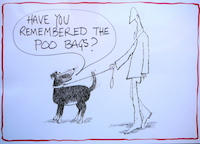

Notice boards
There are three Parish Council noticeboards - one at the top of Mill Lane and
one on the fence at the Recycling Centre, both in Upper Layham; a third one
is located next to The Queen's Head pub in Lower Layham. Notices are also
often posted on the Village Hall notice board and on or near the gates of
the Playing Field.
The Playing Field
The Playing Field is in Upper Layham, immediately adjacent to Brett Green. It
can be accessed from Mill Lane and from Brett Green. It is run by a
Management Committee – Chairman: Michael Woods, tel. 01473 823
798.
At the far end of the field, beside the River Brett, there is
an area hedged off from the play area which is being developed as a
conservation area. It is accessible to walkers but children are dissuaded
from playing there.
The story of Layham Playing Field
Twenty seven years ago our Playing Field was a pasture. It was part of the
land associated with Layham Mill and there was no public access.
In
1981 representation had been made to the Parish Council to seek a play area
as all the agricultural land was fenced off and the only open space for
children to play on was roadways or the greens in Brett Green. Under the
chairmanship of Tom Partridge the Council made enquiries and obtained the
agreement of the then owners of the land (Mr and Mrs Duffield) that when
they sold Mill House and the land around, they would give first option to
the village to purchase the pasture. It was a happy coincidence that they
were about to move away.
An interest free loan for £12,000 was
obtained from the National Playing Fields Association and the pasture was
bought in September 1982. The loan was paid back over 10 years by a local
charge being made on the Council Tax – thus the field was truly bought by
the people. It was a courageous decision by the Parish Council and we are
for ever in their debt.
The field was put in Trust and a committee
formed to manage it. Over the following 27 years, bit by bit, what you see
now has been built up. Local people paid for the trees that made up the
willow plantation (a source of income ever since) and a grant was obtained
to buy the first piece of play equipment. Fund raising was varied – a
sponsored footpath walk, barn dances, firework evenings, fetes, a Burns
Night in the Village Hall – many and varied activities. The 100 Club was
launched and has been supported by local people ever since.
Gates
were put in, more apparatus purchased, a garage store built and more trees
planted – many members of the community have donated trees for different
reasons. In recent years, goalposts and a picnic table have been provided
and most recently a living willow shelter built.
At the far end of
the field a Conservation Area has slowly taken shape – the small posters on
the field describe what has been done there.
What shouldn’t be
forgotten is that all through the 27 years a small group of people have
worked to maintain and develop the field – cutting grass, thickening hedges,
planting the trees, developing the conservation area – in fact almost
everything has been done by local voluntary labour. We pay to have the main
field cut as that is just too much for a small committee.
We know
how much you all value the field – whether a child who loves to play, dog
owner, nature lover, sports enthusiast, fisherman or just someone who likes
to walk in an open space. Please find ways to help your village maintain
this very important place.
The Village Hall
The
village hall is beside the church on Church Lane and is run by a Management
Committee. Bookings for use of the
hall can be made through Rosemary Nicholls (01473 822 878). Crockery and
cutlery
can be hired if required.
The history of the Village Hall in its own words
“I became a feature in Layham on the 20th November 1928. At that time I was
known as ‘The Hut’, a name that stuck with me until 1967.
The Men’s
Club to whom I belonged not only used me as their clubroom, but also allowed
functions for the village, for which they obviously obtained rent to help
with my running costs. There were dances, whist drives and a ’Mixed Club’.
They even held ‘Smoking Parties’ - something that would not be allowed
today! All these functions were arranged and discussed at monthly meetings.
Every year Christmas was celebrated with a children’s party organised by the
Men’s Club.
The Men’s Club purchased a billiards table just before
I was built and with darts, table tennis and carpet bowls, I was regularly
used.
After the war years the membership flagged slightly and the
age limit was reduced to 15yrs. in an effort to rejuvenate
activities.
Membership fees, which used to be 2d per week, were the
maximum allowed by the Government of the time, before the addition of tax.
In 1957 they eventually decided that they would have to increase this sum to
4d a week.
In 1960 they installed a ‘Bering’ stove, which was
positioned against the side wall, as the old oyster stove in the centre was
inconvenient when dances were held.
A change occurred on 30th March
1967, when the keys and responsibility for my care was transferred to a
‘Village Hall Committee’. This Committee was given a kick start with
£366.19.6d from the village fund.
Things ran smoothly for a few
years until my committee had an administrative breakdown with only £2.88
left in the kitty! A new committee was formed with the help of the Parish
Council.
In 1974 I was fixed up with running water.
The
next event I remember was the application to give me charity status. This
was granted on 23rd July 1986.
October 1987 was a disaster, for as
I was resting peacefully one night, a terrible gale forced me to lean over
towards the field next door and I was retired for about six months."
More facts about the Village Hall
The Village Hall was originally built for the ex-service men of Layham after
World War I. The plans to build the hut were proposed and accepted in
January 1928 and the tender was given to a Mr. A. Dunningham at a sum of two
hundred and fifty three pounds four shillings (£253.20 in today’s
money).
The Hut (the name by which it was affectionally known at that time) was
finally completed in November 1928 and was opened officially on the 20th
November by Mrs Tenison. On the 21st November the first whist drive and
dance was held.
A little snippet of interest is that the Men’s Club
bought one hundred stick-back chairs at a price of twenty-one pounds five
shillings, (£21.25). In today’s money this works out at approximately 21
pence each! (In the Autumn of 1996 the Village Hall Committee sold 30 of
these chairs, all of which were damaged, for £17 each!)
The keys of
The Hut were officially handed to the Parish in March 1967 and it
subsequently became known as The Village Hall.
The hall is managed
by the Village Hall Committee, whose core members are Richard Cranfield
(Chairman),
Jan McNelly (Secretary), Judith Hermite (Treasurer) and Rosemary Nicholls
(Bookings). They are responsible to a trust, for the care and
maintenance of the building.
The Committee is responsible to the
Trustees, who are Mr. John English, David English and Nigel
Thorpe.
The major users are Layham Playgroup and the Ladybird Group
(toddlers) during the mornings and the Men’s Club which meets on Tuesday
evenings. The Parish Council and St. Andrew’s Church are regular customers
and the hall is available for private parties & functions etc.
throughout the year.
We are indeed fortunate to have what is now
becoming a unique building. Those of you who use the hall will know that it
has a very ‘personal’ feel about it and over the years the Committee has
done its best to bring the hall into the 21st century in a sympathetic way
retaining as much of the original charm as possible.
Layham Men's Club
The Men’s Club meets in the Village Hall each Tuesday evening where snooker
is played in a relaxed setting with convivial conversation and repartee! If
you are interested to check it out then either just turn up, or phone David
Pratt on 01473 827 667. You will be very welcome.
Layham Allotments
Five small allotments are situated behind Gardeners Close, off Mill Lane.
These are owned and administered by the Parish Council. If you would like
your name to be placed on a waiting list then contact the Clerk to the
Parish Council (Jane Cryer) on 07920 713 940.
Public Footpaths
We
have a good network of footpaths in the Parish. A map showing their routes
is published separately and available from Steve Laing, the Footpath Warden,
on 01473 829 776, or at the Queen's Head Public House. Steve Laing will
also deal with any problems over a footpath.
Bins for dog waste
Four bins are provided at points
where most dog walkers pass (one near each gate on the Playing Field; one at
the top of Water Lane and one outside the Village Hall). These are regularly
emptied by a contractor.
|
 Village facilities
Village facilities


{kind=link}
{kind=link}
{kind=link}